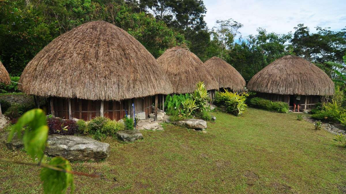

Festival Danau Sentani
Festival Danau Sentani adalah festival pariwisata tahunan yang diadakan di sekitar Danau Sentani. Festival ini diselenggarakan sejak 2007 dan telah menjadi festival tahunan dan masuk dalam kalender pariwisata utama. FDS ini banyak diikuti oleh turis mancanegara maupun turis lokal. Festival Danau Sentani diadakan pada pertengahan bulan Juni tiap tahunnya selama lima hari berturut. Festival ini diisi dengan tarian-tarian adat di atas perahu, tarian perang khas Papua, upacara adat seperti penobatan Ondoafi, dan sajian berbagai kuliner khas Papua.

tarian tradisional
Tarian tradisional Papua sangat beragam, meliputi Tari Sajojo yang energik untuk pergaulan, Tari Suanggi dan Musyoh yang sakral untuk mengusir roh jahat, Tari Yospan dari penggabungan dua tarian rakyat, Tari Perang atau Tobe untuk semangat kepahlawanan, serta tarian lain seperti Aluyen, Awaijale Rilejale, dan Cendrawasih. Tarian-tarian ini memiliki makna dan fungsi yang berbeda-beda, mulai dari menyambut tamu hingga menggambarkan kekayaan alam.

Rumah Adat Honai
Honai merupakan rumah tradisional masyarakat Papua Pegunungan dan Papua Tengah khususnya suku Dani. Rumah honai berbentuk bulat sederhana dengan pintu kecil dan tidak dilengkapi jendela. Lantai bawah biasa digunakan untuk tidur, sedangkan lantai atas digunakan untuk menjalankan aktivitas sehari-hari seperti makan, bersantai dan membuat kerajinan. Pada lantai bawah, dibagian tengah terdapat hipere yaitu tempat api unggun yang dipergunakan untuk memasak atau sekadar menghangatkan tubuh. Bentuk rumah tersebut sama dengan beberapa rumah adat di NTT seperti Ume Kbubu dan Sao Ata Mosa Lakitana.
Terdapat beberapa jenis rumah honai dalam satu kompleks perumahan yang disebut silimo, yaitu rumah honai atau pilamo (khusus laki-laki), rumah ebai atau ewe ai (khusus perempuan), rumah wamai atau wamdabu (kandang ternak), dan hunila atau lesema berbentuk persegi panjang (untuk dapur dan lesehan). Ketiga nama tersebut berasal dari kata dasar "ai" yang berarti rumah, honai berasal dari gabungan kata "hun/hon" yang berarti laki-laki, ebeai berasal dari kata "ebe" yang berarti perempuan, dan wamai berasal dari kata "wam" yang berarti babi.